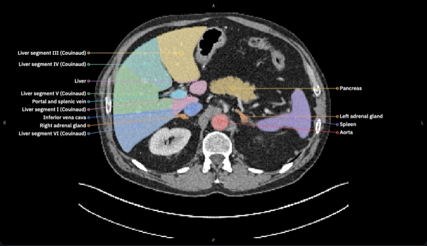
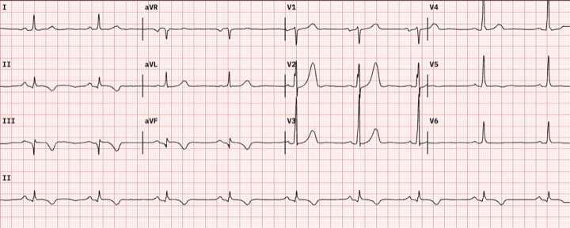
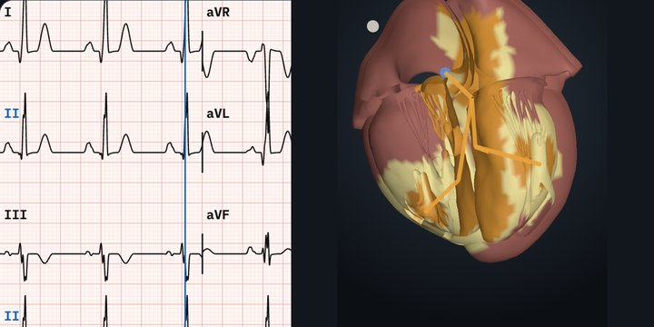
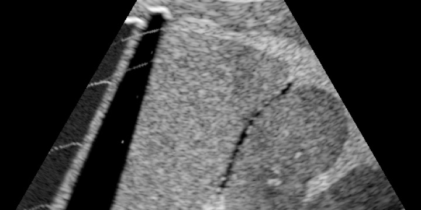
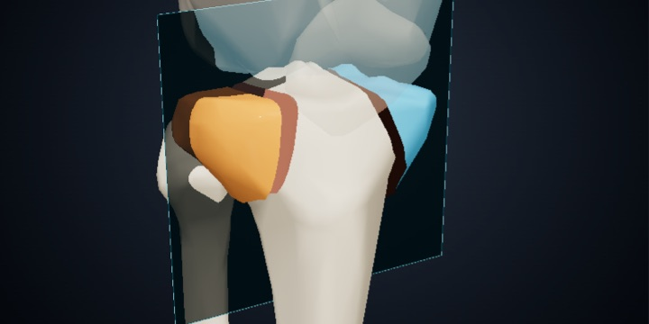

CT Anatomy Atlas
Scroll real CT scans, region by region, in three planes with coloured, labelled structures and key levels.

ECG Atlas
Read real 12-lead ECGs on standard paper, measure with calipers, and quiz yourself on classic patterns.

How the ECG is made
Watch the heart depolarise and recover in 3D, in step with the ECG, and see why each rhythm looks the way it does.

FAST ultrasound trainer
Place a virtual ultrasound probe on a real body, learn the four FAST windows, and see free fluid appear where it collects.

Fractures & operations
See each fracture type on real 3D bones, then plan it: cited current management, the approach with the structures at risk, fixation steps and aftercare.